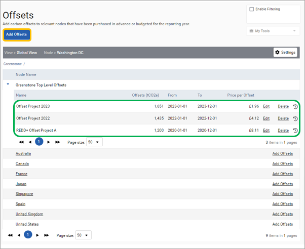
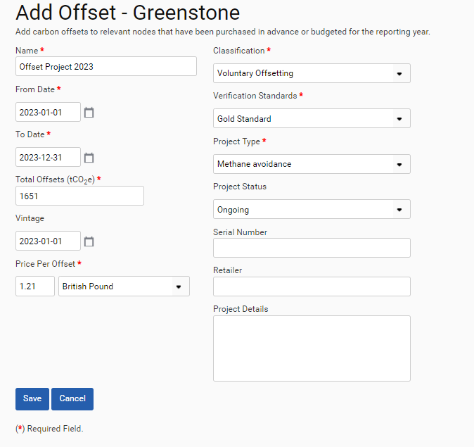

Offsets can also be added to the inputs section. To add offsets, navigate to Inputs > Offsets and then click on Add Offsets (red outline) next to the node. The Add Offsets button at the top (orange outline) will add an offset to the node selected in Settings. Once offsets have been created these are listed beneath the nodes that they have been assigned to (green outline).

Once you have clicked on Add Offsets this form will be displayed. Please complete all of the mandatory fields before saving the form.

Once offsets have been added then these can be viewed on the dedicated Offsets dashboard that is under Management > Offsets Monitoring.